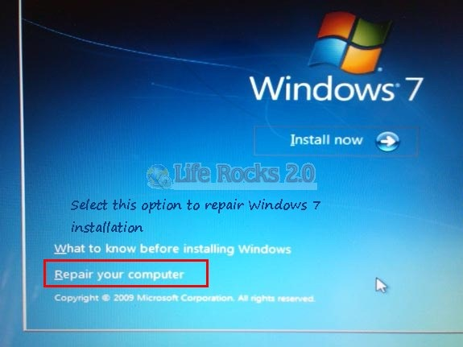
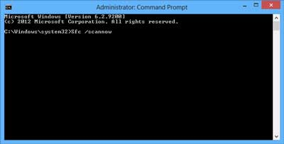
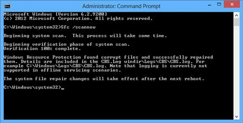

Cara memperbaiki file windows yang hilang tanpa instal ulang
20-Januari-2015 Views : 3,56789Windows adalah Operating system yang paling banyak dipakai oleh orang di dunia. Operating ini menjadi favorit karena OS ini user friendly dan tentunya mempunyai kualitas yang bagus. Saat ini untuk pengguna OS Windows 7 memang masih sangat banyak walaupun sebenarnya windows 8 sudah dirilis sejak lama. Mungkin bagi pengguna windows 7 pernah mengalami kerusakan pada file windows. Misalnya adalah windows explorer not responding, komputer menjadi sering error, aplikasi sering not responding, dan masih banyak yang lainnya

Berikut ini adalah cara untuk memperbaiki file yang hilang atau yang rusak milik Windows tanpa harus install ulang windows. Cara berikut ini juga tidak perlu menggunakan CD installer windows untuk repair windows anda. Berikut tutorialnya:
1. Klik start, lalu cari command prompt dengan mengetikkan cmd.
2. Klik kanan pada icon cmd tersebut lalu pilih Run As Administrator. Maka akan muncul jendela baru command prompt.
3. Setelah muncul jendela baru, silakan anda ketik tulisan berikut ini: Sfc /scannow

4. Tunggu hingga proses berjalan selesai 100%. Ini memerlukan beberapa menit untuk memperbaiki file windows anda yang missing atau corrupt

5. Jika proses sudah selesai, silakan tutup semua aplikasi yang berjalan dan restart komputer anda. Untuk merestart komputer juga akan berjalan lama karena windows akan mengupdate informasi file windows anda. Jika komputer sudah terestart dengan baik, maka windows kamu akan kembali berjalan normal seperti sedia kala. Namun jika pada saat proses sedang berjalan dan tiba-tiba windows menyuruh kamu untuk memasukkan CD installer windows, maka kamu harus memasukkan CD installer windows ke dalam komputer.


{kind=link}
{kind=link}
{kind=link}